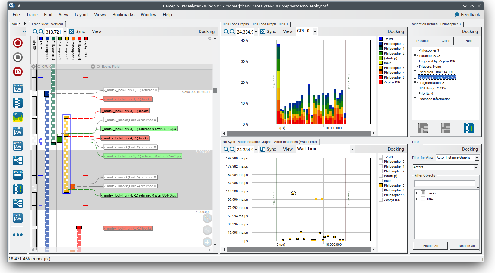
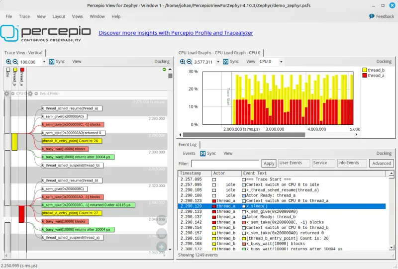
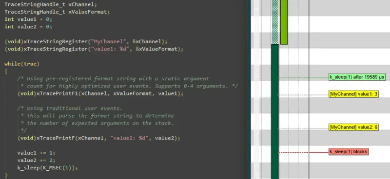
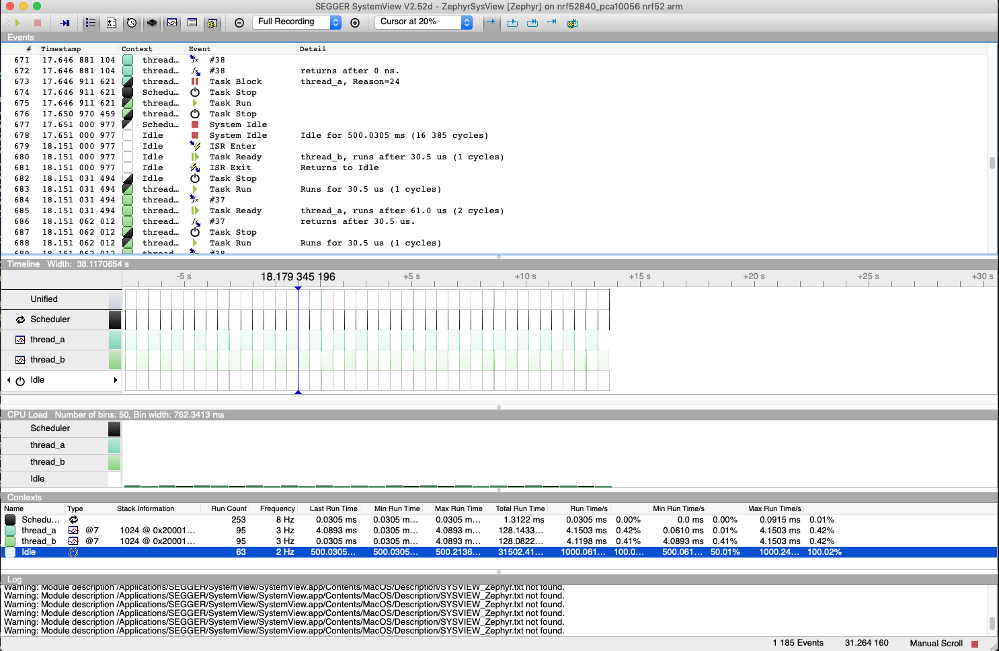

Tracing
Overview
The tracing feature provides hooks that permits you to collect data from your application and allows Tracing Tools running on a host to visualize the inner-working of the kernel and various subsystems.
Every system has application-specific events to trace out. Historically, that has implied:
Determining the application-specific payload,
Choosing suitable serialization-format,
Writing the on-target serialization code,
Deciding on and writing the I/O transport mechanics,
Writing the PC-side deserializer/parser,
Writing custom ad-hoc tools for filtering and presentation.
An application can use one of the existing formats or define a custom format by overriding the macros declared in include/zephyr/tracing/tracing.h.
Different formats, transports and host tools are available and supported in Zephyr.
In fact, I/O varies greatly from system to system. Therefore, it is instructive to create a taxonomy for I/O types when we must ensure the interface between payload/format (Top Layer) and the transport mechanics (bottom Layer) is generic and efficient enough to model these. See the I/O taxonomy section below.
Named Trace Events
Although the user can extend any of the supported serialization formats to enable additional tracing functions (or provide their own backend), zephyr also provides one generic named tracing function for convenience purposes, as well as to demonstrate how tracing frameworks could be extended.
Users can generate a custom trace event by calling
sys_trace_named_event(), which takes an event name as well as two
arbitrary 4 byte arguments. Tracing backends may truncate the provided event
name if it is too long for the serialization format they support.
Serialization Formats
Common Trace Format (CTF) Support
Common Trace Format, CTF, is an open format and language to describe trace formats. This enables tool reuse, of which line-textual (babeltrace) and graphical (TraceCompass) variants already exist.
CTF should look familiar to C programmers but adds stronger typing. See CTF - A Flexible, High-performance Binary Trace Format.
CTF allows us to formally describe application specific payload and the serialization format, which enables common infrastructure for host tools and parsers and tools for filtering and presentation.
A Generic Interface
In CTF, an event is serialized to a packet containing one or more fields. As seen from I/O taxonomy section below, a bottom layer may:
perform actions at transaction-start (e.g. mutex-lock),
process each field in some way (e.g. sync-push emit, concat, enqueue to thread-bound FIFO),
perform actions at transaction-stop (e.g. mutex-release, emit of concat buffer).
CTF Top-Layer Example
The CTF_EVENT macro will serialize each argument to a field:
/* Example for illustration */
static inline void ctf_top_foo(uint32_t thread_id, ctf_bounded_string_t name)
{
CTF_EVENT(
CTF_LITERAL(uint8_t, 42),
thread_id,
name,
"hello, I was emitted from function: ",
__func__ /* __func__ is standard since C99 */
);
}
How to serialize and emit fields as well as handling alignment, can be done internally and statically at compile-time in the bottom-layer.
The CTF top layer is enabled using the configuration option
CONFIG_TRACING_CTF and can be used with the different transport
backends both in synchronous and asynchronous modes.
Tracing Tools
Zephyr includes support for several popular tracing tools, presented below in alphabetical order.
Percepio Tracealyzer Support
Zephyr includes support for Percepio Tracealyzer that offers trace visualization for simplified analysis, report generation and other analysis features. Tracealyzer allows for trace streaming over various interfaces and also snapshot tracing, where the events are kept in a RAM buffer.
{kind=link}

Zephyr kernel events are captured automatically when Tracealyzer tracing is enabled. Tracealyzer also provides extensive support for application logging, where you call the tracing library from your application code. This lets you visualize kernel events and application events together, for example as data plots or state diagrams on logged variables. Learn more in the Tracealyzer User Manual provided with the application.
Percepio TraceRecorder and Stream Ports
The tracing library for Tracealyzer (TraceRecorder) is included in the Zephyr manifest and provided under the same license (Apache 2.0). This is enabled by adding the following configuration options in your prj.conf:
CONFIG_TRACING=y
CONFIG_PERCEPIO_TRACERECORDER=y
Or using menuconfig:
Enable
Under , select Percepio Tracealyzer
Some additional settings are needed to configure TraceRecorder. The most important configuration is to select the right “stream port”. This specifies how to output the trace data. As of July 2024, the following stream ports are available in the Zephyr configuration system:
Ring Buffer: The trace data is kept in a circular RAM buffer.
RTT: Trace streaming via Segger RTT on J-Link debug probes.
ITM: Trace streaming via the ITM function on Arm Cortex-M devices.
Semihost: For tracing on QEMU. Streams the trace data to a host file.
Select the stream port in menuconfig under .
Or simply add one of the following options in your prj.conf:
CONFIG_PERCEPIO_TRC_CFG_STREAM_PORT_RINGBUFFER=y
CONFIG_PERCEPIO_TRC_CFG_STREAM_PORT_RTT=y
CONFIG_PERCEPIO_TRC_CFG_STREAM_PORT_ITM=y
CONFIG_PERCEPIO_TRC_CFG_STREAM_PORT_ZEPHYR_SEMIHOST=y
Make sure to only include ONE of these configuration options.
The stream port modules have individual configuration options. In menuconfig these are found under . The most important options for each stream port are described below.
Tracealyzer Snapshot Tracing (Ring Buffer)
The “Ring Buffer” stream port keeps the trace data in a RAM buffer on the device. By default, this is a circular buffer, meaning that it always contains the most recent data. This is used to dump “snapshots” of the trace data, e.g. by using the debugger. This usually only allows for short traces, unless you have megabytes of RAM to spare, so it is not suitable for profiling. However, it can be quite useful for debugging in combination with breakpoints. For example, if you set a breakpoint in an error handler, a snapshot trace can show the sequence of events leading up to the error. Snapshot tracing is also easy to begin with, since it doesn’t depend on any particular debug probe or other development tool.
To use the Ring Buffer option, make sure to have the following configuration options in your prj.cnf:
CONFIG_TRACING=y
CONFIG_PERCEPIO_TRACERECORDER=y
CONFIG_PERCEPIO_TRC_START_MODE_START=y
CONFIG_PERCEPIO_TRC_CFG_STREAM_PORT_RINGBUFFER=y
CONFIG_PERCEPIO_TRC_CFG_STREAM_PORT_RINGBUFFER_SIZE=<size in bytes>
Or if using menuconfig:
Enable
Under , select Percepio Tracealyzer
Under , select Start
Under , select Ring Buffer
Under , set the buffer size in bytes.
The default buffer size can be reduced if you are tight on RAM, or increased if you have RAM to spare and want longer traces. You may also optimize the Tracing Configuration settings to get longer traces by filtering out less important events. In menuconfig, see .
To view the trace data, the easiest way is to start your debugger (west debug) and run the following GDB command:
dump binary value trace.bin *RecorderDataPtr
The resulting file is typically found in the root of the build folder, unless a different path is specified. Open this file in Tracealyzer by selecting .
Tracealyzer Streaming with SEGGER RTT
Tracealyzer has built-in support for SEGGER RTT to receive trace data using a J-Link probe. This allows for recording very long traces. To configure Zephyr for RTT streaming to Tracealyzer, add the following configuration options in your prj.cnf:
CONFIG_TRACING=y
CONFIG_PERCEPIO_TRACERECORDER=y
CONFIG_PERCEPIO_TRC_START_MODE_START_FROM_HOST=y
CONFIG_PERCEPIO_TRC_CFG_STREAM_PORT_RTT=y
CONFIG_PERCEPIO_TRC_CFG_STREAM_PORT_RTT_UP_BUFFER_SIZE=<size in bytes>
Or if using menuconfig:
Enable
Under , select Percepio Tracealyzer
Under , select Start From Host
Under , select RTT
Under , set the size of the RTT “up” buffer in bytes.
The setting RTT buffer size up sets the size of the RTT transmission buffer. This is important for throughput. By default this buffer is quite large, 5000 bytes, to give decent performance also on onboard J-Link debuggers (they are not as fast as the stand-alone probes). If you are tight on RAM, you may consider reducing this setting. If using a regular J-Link probe it is often sufficient with a much smaller buffer, e.g. 1 KB or less.
Learn more about RTT streaming in the Tracealyzer User Manual. See Creating and Loading Traces -> Percepio TraceRecorder -> Using TraceRecorder v4.6 or later -> Stream ports (or search for RTT).
Tracealyzer Streaming with Arm ITM
This stream port is for Arm Cortex-M devices featuring the ITM unit. It is recommended to use a fast debug probe that allows for SWO speeds of 10 MHz or higher. To use this stream port, apply the following configuration options:
CONFIG_TRACING=y
CONFIG_PERCEPIO_TRACERECORDER=y
CONFIG_PERCEPIO_TRC_START_MODE_START=y
CONFIG_PERCEPIO_TRC_CFG_STREAM_PORT_ITM=y
CONFIG_PERCEPIO_TRC_CFG_STREAM_PORT_ITM_PORT=1
Or if using menuconfig:
Enable
Under , select Percepio Tracealyzer
Under , select Start
Under , select ITM
Under , set the ITM port to 1.
The main setting for the ITM stream port is the ITM port (0-31). A dedicated channel is needed for Tracealyzer. Port 0 is usually reserved for printf logging, so channel 1 is used by default.
The option Use internal buffer should typically remain disabled. It buffers the data in RAM before transmission and defers the data transmission to the periodic TzCtrl thread.
The host-side setup depends on what debug probe you are using. Learn more in the Tracealyzer User Manual. See .
Tracealyzer Streaming from QEMU (Semihost)
This stream port is designed for Zephyr tracing in QEMU. This can be an easy way to get started with tracing and try out streaming trace without needing a fast debug probe. The data is streamed to a host file using semihosting. To use this option, apply the following configuration options:
CONFIG_SEMIHOST=y
CONFIG_TRACING=y
CONFIG_PERCEPIO_TRACERECORDER=y
CONFIG_PERCEPIO_TRC_START_MODE_START=y
CONFIG_PERCEPIO_TRC_CFG_STREAM_PORT_ZEPHYR_SEMIHOST=y
Using menuconfig
Enable
Enable
Under , select Percepio Tracealyzer
Under , select Start
Under , select Semihost
By default, the resulting trace file is found in ./trace.psf in the root of the build folder,
unless a different path is specified. Open this file in Percepio Tracealyzer by selecting
.
Recorder Start Mode
You may have noticed the Recorder Start Mode option in the Tracealyzer examples above. This decides when the tracing starts. With the option Start, the tracing begins directly at startup, once the TraceRecorder library has been initialized. This is recommended when using the Ring Buffer and Semihost stream ports.
For streaming via RTT or ITM you may also use Start From Host or Start Await Host. Both listens for start commands from the Tracealyzer application. The latter option, Start Await Host, causes the TraceRecorder initialization to block until the start command is received from the Tracealyzer application.
Custom Stream Ports for Tracealyzer
The stream ports are small modules within TraceRecorder that define what functions to call to output the trace data and (optionally) how to read start/stop commands from Tracealyzer. It is fairly easy to make custom stream ports to implement your own data transport and Tracealyzer can receive trace streams over various interfaces, including files, sockets, COM ports, named pipes and more. Note that additional stream port modules are available in the TraceRecorder repo (e.g. lwIP), although they might require modifications to work with Zephyr.
Learning More
Learn more about how to get started in the Tracealyzer Getting Started Guides.
Percepio View for Zephyr
Percepio View is a free-of-charge tracing tool based on Percepio Tracealyzer, intended for debugging and verification of Zephyr applications.
{kind=link}

Percepio View can be used side-by-side with a traditional debugger and complements your debugger by visualising the real-time execution of threads, ISRs, syscalls and your own “User Events”.
{kind=link}

To learn more about Percepio View, how to get started and upgrade options, check out Percepio’s product page.
Percepio View provides snapshot tracing, meaning the data is stored to a ring-buffer in target RAM and is saved to host using the regular debugger connection. For trace streaming support, Percepio offers (paid-for) upgrades to Percepio Profile or Percepio Tracealyzer. No modifications of the Zephyr source code are needed, only enabling the TraceRecorder library in Kconfig. Percepio View runs on Windows and Linux hosts.
SEGGER SystemView Support
Zephyr provides built-in support for SEGGER SystemView that can be enabled in any application for platforms that have the required hardware support.
The payload and format used with SystemView is custom to the application and relies on RTT as a transport. Newer versions of SystemView support other transports, for example UART or using snapshot mode (both still not supported in Zephyr).
To enable tracing support with SEGGER SystemView add the SystemView RTT Tracing Snippet (rtt-tracing) to your build command:
west build -b <board> -S rtt-tracing samples/synchronization
SystemView can also be used for post-mortem tracing, which can be enabled with
CONFIG_SEGGER_SYSVIEW_POST_MORTEM_MODE. In this mode, a debugger can
be attached after the system has crashed using west attach after which the
latest data from the internal RAM buffer can be loaded into SystemView.
{kind=link}

Recent versions of SEGGER SystemView come with an API translation table for Zephyr which is incomplete and does not match the current level of support available in Zephyr. To use the latest Zephyr API description table, copy the file available in the tree to your local configuration directory to override the builtin table:
# On Linux and MacOS
cp $ZEPHYR_BASE/subsys/tracing/sysview/SYSVIEW_Zephyr.txt ~/.config/SEGGER/
TraceCompass
TraceCompass is an open source tool that visualizes CTF events such as thread scheduling and interrupts, and is helpful to find unintended interactions and resource conflicts on complex systems.
See also the presentation by Ericsson, Advanced Trouble-shooting Of Real-time Systems.
User-Defined Tracing
This tracing format allows the user to define functions to perform any work desired when a task is switched in or out, when an interrupt is entered or exited, and when the cpu is idle.
Examples include: - simple toggling of GPIO for external scope tracing while minimizing extra cpu load - generating/outputting trace data in a non-standard or proprietary format that can not be supported by the other tracing systems
The following functions can be defined by the user:
void sys_trace_thread_create_user(struct k_thread *thread);
void sys_trace_thread_abort_user(struct k_thread *thread);
void sys_trace_thread_suspend_user(struct k_thread *thread);
void sys_trace_thread_resume_user(struct k_thread *thread);
void sys_trace_thread_name_set_user(struct k_thread *thread);
void sys_trace_thread_switched_in_user(struct k_thread *thread);
void sys_trace_thread_switched_out_user(struct k_thread *thread);
void sys_trace_thread_info_user(struct k_thread *thread);
void sys_trace_thread_sched_ready_user(struct k_thread *thread);
void sys_trace_thread_pend_user(struct k_thread *thread);
void sys_trace_thread_priority_set_user(struct k_thread *thread, int prio);
void sys_trace_isr_enter_user(int nested_interrupts);
void sys_trace_isr_exit_user(int nested_interrupts);
void sys_trace_idle_user();
Enable this format with the CONFIG_TRACING_USER option.
Transport Backends
The following backends are currently supported:
UART
USB
File (Using the native port with POSIX architecture based targets)
RTT (With SystemView)
RAM (buffer to be retrieved by a debugger)
Using Tracing
The sample samples/subsys/tracing demonstrates tracing with different formats and backends.
To get started, the simplest way is to use the CTF format with the native_sim port, build the sample as follows:
Using west:
# From the root of the zephyr repository
west build -b native_sim samples/subsys/tracing -- -DCONF_FILE=prj_native_ctf.conf
Using CMake and ninja:
# From the root of the zephyr repository
# Use cmake to configure a Ninja-based buildsystem:
cmake -Bbuild -GNinja -DBOARD=native_sim -DCONF_FILE=prj_native_ctf.conf samples/subsys/tracing
# Now run the build tool on the generated build system:
ninja -Cbuild
You can then run the resulting binary with the option -trace-file to generate
the tracing data:
mkdir data
cp $ZEPHYR_BASE/subsys/tracing/ctf/tsdl/metadata data/
./build/zephyr/zephyr.exe -trace-file=data/channel0_0
The resulting CTF output can be visualized using babeltrace or TraceCompass
by pointing the tool to the data directory with the metadata and trace files.
Using RAM backend
For devices that do not have available I/O for tracing such as USB or UART but have
enough RAM to collect trace data, the ram backend can be enabled with configuration
CONFIG_TRACING_BACKEND_RAM.
Adjust CONFIG_RAM_TRACING_BUFFER_SIZE to be able to record enough traces for your needs.
Then thanks to a runtime debugger such as gdb this buffer can be fetched from the target
to an host computer:
(gdb) dump binary memory data/channel0_0 <ram_tracing_start> <ram_tracing_end>
The resulting channel0_0 file have to be placed in a directory with the metadata
file like the other backend.
Future LTTng Inspiration
Currently, the top-layer provided here is quite simple and bare-bones, and needlessly copied from Zephyr’s Segger SystemView debug module.
For an OS like Zephyr, it would make sense to draw inspiration from Linux’s LTTng and change the top-layer to serialize to the same format. Doing this would enable direct reuse of TraceCompass’ canned analyses for Linux. Alternatively, LTTng-analyses in TraceCompass could be customized to Zephyr. It is ongoing work to enable TraceCompass visibility of Zephyr in a target-agnostic and open source way.
I/O Taxonomy
Atomic Push/Produce/Write/Enqueue:
- synchronous:
means data-transmission has completed with the return of the call.
- asynchronous:
means data-transmission is pending or ongoing with the return of the call. Usually, interrupts/callbacks/signals or polling is used to determine completion.
- buffered:
means data-transmissions are copied and grouped together to form a larger ones. Usually for amortizing overhead (burst dequeue) or jitter-mitigation (steady dequeue).
- Examples:
- sync unbuffered
E.g. PIO via GPIOs having steady stream, no extra FIFO memory needed. Low jitter but may be less efficient (can’t amortize the overhead of writing).
- sync buffered
E.g.
fwrite()or enqueuing into FIFO. Blockingly burst the FIFO when its buffer-waterlevel exceeds threshold. Jitter due to bursts may lead to missed deadlines.
- async unbuffered
E.g. DMA, or zero-copying in shared memory. Be careful of data hazards, race conditions, etc!
- async buffered
E.g. enqueuing into FIFO.
Atomic Pull/Consume/Read/Dequeue:
- synchronous:
means data-reception has completed with the return of the call.
- asynchronous:
means data-reception is pending or ongoing with the return of the call. Usually, interrupts/callbacks/signals or polling is used to determine completion.
- buffered:
means data is copied-in in larger chunks than request-size. Usually for amortizing wait-time.
- Examples:
- sync unbuffered
E.g. Blocking read-call,
fread()or SPI-read, zero-copying in shared memory.
- sync buffered
E.g. Blocking read-call with caching applied. Makes sense if read pattern exhibits spatial locality.
- async unbuffered
E.g. zero-copying in shared memory. Be careful of data hazards, race conditions, etc!
- async buffered
E.g.
aio_read()or DMA.
Unfortunately, I/O may not be atomic and may, therefore, require locking. Locking may not be needed if multiple independent channels are available.
- The system has non-atomic write and one shared channel
E.g. UART. Locking required.
lock(); emit(a); emit(b); emit(c); release();
- The system has non-atomic write but many channels
E.g. Multi-UART. Lock-free if the bottom-layer maps each Zephyr thread+ISR to its own channel, thus alleviating races as each thread is sequentially consistent with itself.
emit(a,thread_id); emit(b,thread_id); emit(c,thread_id);
- The system has atomic write but one shared channel
E.g.
native_simor board with DMA. May or may not need locking.
emit(a ## b ## c); /* Concat to buffer */
lock(); emit(a); emit(b); emit(c); release(); /* No extra mem */
- The system has atomic write and many channels
E.g. native_sim or board with multi-channel DMA. Lock-free.
emit(a ## b ## c, thread_id);
Object tracking
The kernel can also maintain lists of objects that can be used to track their usage. Currently, the following lists can be enabled:
struct k_timer *_track_list_k_timer;
struct k_mem_slab *_track_list_k_mem_slab;
struct k_sem *_track_list_k_sem;
struct k_mutex *_track_list_k_mutex;
struct k_stack *_track_list_k_stack;
struct k_msgq *_track_list_k_msgq;
struct k_mbox *_track_list_k_mbox;
struct k_pipe *_track_list_k_pipe;
struct k_queue *_track_list_k_queue;
struct k_event *_track_list_k_event;
Those global variables are the head of each list - they can be traversed
with the help of macro SYS_PORT_TRACK_NEXT. For instance, to traverse
all initialized mutexes, one can write:
struct k_mutex *cur = _track_list_k_mutex;
while (cur != NULL) {
/* Do something */
cur = SYS_PORT_TRACK_NEXT(cur);
}
To enable object tracking, enable CONFIG_TRACING_OBJECT_TRACKING.
Note that each list can be enabled or disabled via their tracing
configuration. For example, to disable tracking of semaphores, one can
disable CONFIG_TRACING_SEMAPHORE.
Object tracking is behind tracing configuration as it currently leverages tracing infrastructure to perform the tracking.